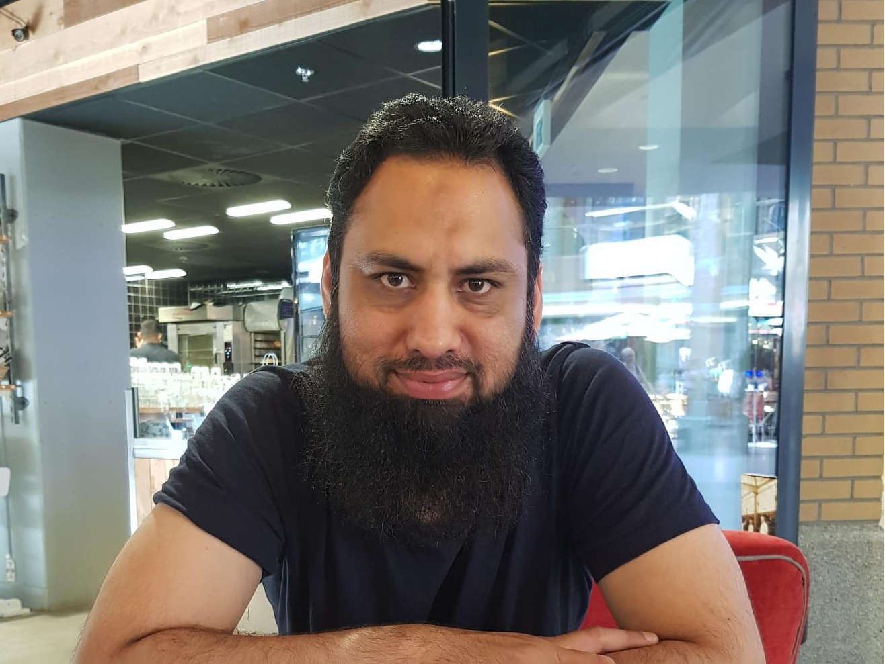

Tahir Abbas
Assistant Professor, Agentic AI for Smart Systems
Information Technology Group, Wageningen University & Research
I am an Assistant Professor in Agentic AI for Smart Systems at Wageningen University & Research, where I study how people work with, and increasingly oversee, artificial intelligence. My research spans human-computer interaction, crowd-powered systems, conversational agents, and social robotics, with a current focus on agentic AI and human oversight of AI agents. I completed my PhD at Eindhoven University of Technology, and previously held research and teaching positions at TU Delft, alongside two years of industry experience in user research and technical communication.